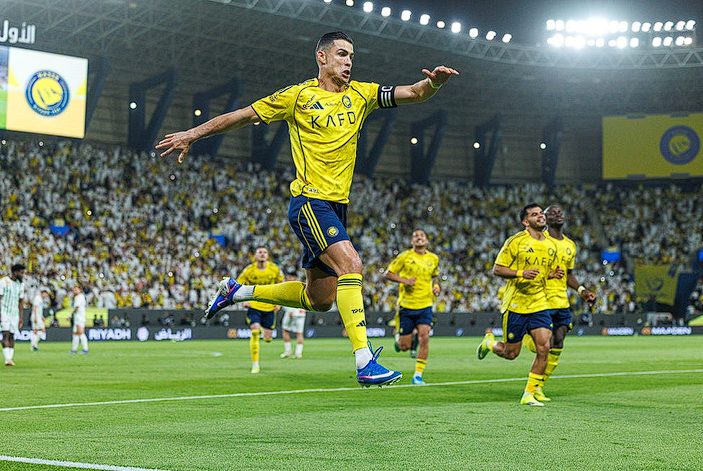

O Al-Nassr venceu o Al-Najma nesta sexta-feira, por 5 a 2, no estádio Alawwal Park, em Riade, em jogo válido pela 27º rodada da Saudi Pro League 2025/26. O atacante Cristiano Ronaldo foi fundamental para essa vitória, ao marcar duas vezes, uma delas em cobrança de pênalti.
CR7 converteu a cobrança de pênalti aos 11 minutos do segundo tempo. Naquele momento, o jogo estava empatado em 2 a 2. O outro gol saiu aos 28 minutos da etapa final, após chute forte dentro da área.
O Al-Najma saiu na frente quase no final do primeiro tempo, com o gol do meio-campista Altuayhi. O Al-Nassr igualou antes do intervalo, gol do centroavante Al-Hamdan, e depois virou o placar graças ao atacante Sadio Mané, também nos acréscimos. O segundo gol do Al-Najma foi do atacante brasileiro Felippe Cardoso, logo no início do segundo tempo.

Cristiano Ronaldo comemora o primeiro gol marcado pelo Al-Nassr contra o Al-Najma — Foto: Getty Images
O craque perdeu dois jogos do Al-Nassr por causa da recente lesão na coxa direita. Cristiano também desfalcou a seleção de Portugal na última data Fifa devido a esse problema físico. A sua última partida pelo time saudita havia sido no dia 28 de fevereiro, contra o Al-Fayha.>
Com o resultado desta sexta-feira, o Al-Nassr ampliou a sua vantagem na liderança da Saudi Pro League. O líder do campeonato agora soma 70 pontos, seis a mais do que o Al-Hilal, segundo colocado.
Cristiano Ronaldo comemora o segundo gol do Al-Nassr sobre o Al-Najma — Foto: Divulgação / Al-Nassr
Por Redação do Sportx — Riade, Arábia Saudita
03/04/2026 17h07